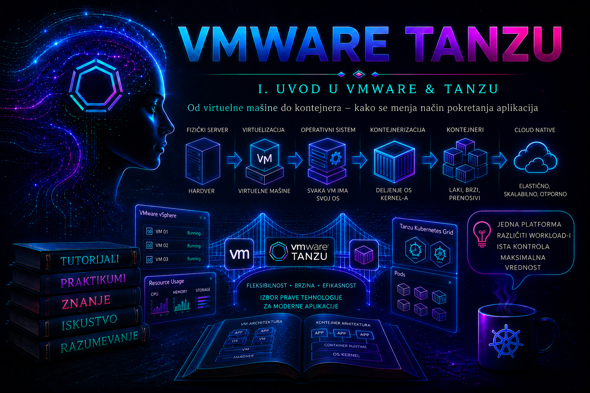

VMware & Tanzu

Prelazak sa fizičkih servera na virtuelne mašine promenio je način na koji se planiraju, nabavljaju i koriste računarski resursi. Prelazak sa virtuelnih mašina na kontejnere menja nešto drugo: način na koji se aplikacija pakuje, isporučuje, pokreće i održava. Virtuelna mašina i kontejner zato nisu dve verzije istog proizvoda niti rešenja koja se međusobno potpuno isključuju. U savremenom enterprise okruženju kontejneri se veoma često izvršavaju upravo unutar virtuelnih mašina koje obezbeđuju VMware vSphere i srodne infrastrukturne platforme.
Administrator mora jasno da razlikuje ova dva sloja. Virtuelizacija razdvaja operativne sisteme od fizičkog hardvera, dok kontejnerizacija razdvaja aplikacije od konkretnog korisničkog prostora operativnog sistema. Hipervizor upravlja virtuelnim procesorima, memorijom, diskovima, mrežnim adapterima i virtuelnim mašinama. Kontejnerski runtime upravlja image-ima, izolovanim procesima, njihovim filesystem slojevima, mrežama, resursnim ograničenjima i životnim ciklusom kontejnera. Kubernetes, uključujući Kubernetes platforme povezane sa Tanzu okruženjem, nalazi se iznad runtime sloja i automatizuje raspoređivanje, oporavak, skaliranje i povezivanje kontejnerskih workload-a.
Nazivi proizvoda i način implementacije zavise od izdanja. U vSphere 8 dokumentaciji koristi se naziv vSphere Supervisor, dok novija VMware Cloud Foundation dokumentacija Supervisor pozicionira kao Kubernetes-zasnovan IaaS control plane u okviru VCF-a. Mogućnost da se VM workload-i deklarativno koriste preko VM Service-a nije dokaz da su VM i kontejner isti objekat; ona samo pruža zajednički API i governance sloj. Dostupnost Supervisor-a, VM Service-a, pojedinih Supervisor Services i Kubernetes klaster servisa mora se proveriti prema konkretnoj VCF/vSphere verziji, licenci i podržanoj topologiji, a ne zaključivati iz generičkog naziva „Tanzu”.
Zašto virtuelna mašina nije isto što i kontejner
Virtuelna mašina predstavlja softverski definisan računar. Ona dobija virtuelni procesor, virtuelnu memoriju, virtuelni disk, mrežni adapter, firmware i druge uređaje koje gostujući operativni sistem vidi kao sopstveni hardver. Na ESXi hostu više virtuelnih mašina može istovremeno koristiti isti fizički server, ali svaka virtuelna mašina pokreće svoj kernel i kompletan gostujući operativni sistem.
Kontejner nije virtuelni računar. On je jedan ili više procesa koji koriste kernel host operativnog sistema, ali se izvršavaju u izolovanom korisničkom prostoru. Linux namespace mehanizmi ograničavaju pogled procesa na druge procese, mrežne interfejse, mount tačke, host name i druge sistemske resurse. Control groups, odnosno cgroups, evidentiraju i ograničavaju potrošnju procesora, memorije, broja procesa i drugih resursa. Sigurnosni mehanizmi kao što su Linux capabilities, seccomp, SELinux ili AppArmor dodatno sužavaju ono što proces unutar kontejnera sme da uradi.
| Osobina | Virtuelna mašina | Kontejner |
|---|---|---|
| Osnovna jedinica | Virtuelni računar sa sopstvenim operativnim sistemom | Izolovani aplikacioni proces ili grupa procesa |
| Kernel | Svaka VM pokreće sopstveni kernel | Kontejneri dele kernel hosta |
| Pokretanje | Boot firmware-a, kernela i servisa operativnog sistema | Pokretanje procesa definisanog image-om |
| Tipična veličina | Obuhvata disk operativnog sistema, aplikacije i podatke | Obuhvata aplikaciju, runtime biblioteke i potrebne filesystem slojeve |
| Izolacija | Granica hipervizora i zaseban kernel | Izolacija procesa unutar zajedničkog kernela |
| Administrativni objekat | VM konfiguracija, guest OS, virtuelni diskovi i uređaji | Image, kontejner, volume, mreža i runtime konfiguracija |
| Tipičan životni ciklus | Dugotrajan sistem koji se ažurira tokom vremena | Potrošni objekat koji se zamenjuje novom instancom |
Razlika u izolaciji ima neposredne bezbednosne posledice. Kompromitovanje procesa unutar virtuelne mašine samo po sebi ne daje pristup kernelu druge virtuelne mašine. Kod standardnih Linux kontejnera kompromitovani proces deli kernel sa drugim kontejnerima na istom node-u. Namespace i cgroup izolacija ne predstavljaju istu granicu kao zaseban gostujući kernel. Zbog toga se posebno osetljivi workload-i razdvajaju na posebne node-ove, virtuelne mašine ili koriste dodatno izolovani runtime-i, u zavisnosti od procene rizika i mogućnosti platforme.
Kako se menja jedinica isporuke aplikacije
U tradicionalnom modelu aplikacija se instalira u postojeći operativni sistem. Administratori prvo pripreme virtuelnu mašinu, instaliraju operativni sistem, zakrpe ga, podese repozitorijume, naprave korisnike, instaliraju runtime, biblioteke i aplikacioni server, a zatim kopiraju aplikaciju i njenu konfiguraciju. Ista procedura mora biti ponovljiva na razvojnom, testnom i produkcionom sistemu. Razlike u verzijama biblioteka, konfiguraciji operativnog sistema ili ručno izvršenim koracima često proizvode problem poznat kao configuration drift.
U kontejnerskom modelu jedinica isporuke postaje container image. OCI Image Specification opisuje interoperabilni format koji obuhvata manifest, konfiguraciju i jedan ili više filesystem slojeva. Image je nepromenljiv predložak. Pokretanjem image-a nastaje kontejner sa dodatnim upisivim slojem. Promene napravljene samo u tom sloju nisu pouzdan način trajnog čuvanja podataka, jer nestaju kada se kontejner ukloni.
Image zato treba da sadrži aplikaciju, tačno određeni runtime i potrebne biblioteke, ali ne i trajne poslovne podatke, lozinke ili konfiguraciju specifičnu za jedno okruženje. Konfiguracija se prosleđuje promenljivama okruženja, konfiguracionim fajlovima, Kubernetes ConfigMap objektima ili drugim kontrolisanim mehanizmima. Tajne se isporučuju preko namenskih secret mehanizama i sistema za upravljanje tajnama, a ne ugrađuju se u image slojeve.
Administrator više ne pita samo „na kom serveru je aplikacija instalirana”, već proverava koji image digest je pokrenut, iz kog registra je preuzet, ko ga je izgradio, koji su mu slojevi, da li je potpisan i skeniran, koje resurse kontejner sme da koristi i gde se nalaze njegovi trajni podaci. Naziv image-a ili tag nije dovoljan dokaz identiteta. Tag može biti promenjen tako da pokazuje na novi sadržaj, dok digest predstavlja kriptografski identifikator konkretnog image manifesta.
Image, kontejner, registry i runtime
Četiri pojma moraju ostati strogo razdvojena. Image je nepromenljivi paket. Kontejner je konkretna pokrenuta ili zaustavljena instanca image-a. Registry je servis za skladištenje i distribuciju image-a. Container runtime preuzima image, priprema filesystem, mrežu i izolaciju i pokreće proces.
Podman, Docker Engine i slični alati administratoru nude komande visokog nivoa za izgradnju i upravljanje kontejnerima. U Kubernetes node-u kubelet ne treba da zavisi od korisničkog CLI alata, već komunicira sa runtime-om preko Container Runtime Interface protokola. Aktuelne Kubernetes implementacije tipično koriste CRI kompatibilne runtime-e kao što su containerd ili CRI-O. OCI runtime nižeg nivoa, na primer runc ili crun, zatim kreira i pokreće izolovani proces prema OCI Runtime Specification pravilima.
Važno je razlikovati format image-a od runtime proizvoda. Image napravljen kompatibilnim alatom može raditi sa različitim OCI i CRI usklađenim komponentama. Istorijska promena kojom je Kubernetes uklonio ugrađeni dockershim nije ukinula podršku za image-e napravljene Docker alatima. Promenjen je način komunikacije kubelet-a sa runtime slojem, a ne osnovni OCI koncept image-a.
Zašto se kontejneri pokreću brže
Pokretanje virtuelne mašine obuhvata inicijalizaciju virtuelnog hardvera, pokretanje kernela gostujućeg sistema, aktiviranje systemd ili drugog init sistema i podizanje sistemskih servisa. Kontejner najčešće pokreće samo aplikacioni proces u već aktivnom kernelu. Zato se nova instanca kontejnerske aplikacije može pokrenuti znatno brže i uz manje dodatne memorije od nove virtuelne mašine.
Brže pokretanje ne znači da je svaka kontejnerska aplikacija trenutno spremna za saobraćaj. Image možda mora biti preuzet preko mreže, raspakovan i proveren. Aplikacija može čekati bazu, izvršavati migraciju šeme, puniti cache ili učitavati velike modele. Administrator razlikuje stanje „proces je pokrenut” od stanja „aplikacija je funkcionalno spremna”. U Kubernetes okruženju tome služe startup, readiness i liveness probe mehanizmi, dok samostalni runtime može koristiti healthcheck i spoljašnji monitoring.
Veličina image-a direktno utiče na vreme distribucije, potrošnju registry prostora i površinu za ranjivosti. Višeslojna struktura omogućava da se zajednički slojevi ponovo koriste, ali loše organizovan Containerfile može poništiti tu prednost. Dodavanje velikog fajla u jednom sloju, pa njegovo brisanje u sledećem, ne uklanja ga iz prethodnog sloja. Build kontekst takođe ne sme sadržati tajne, arhive i nepotrebne direktorijume.
Promena administratorskog modela
Virtuelna mašina se često održava promenama unutar postojećeg sistema: instaliraju se zakrpe, menja konfiguracija i restartuju servisi. U zrelom kontejnerskom modelu promena aplikacije ili njenih ugrađenih zavisnosti proizvodi novi image. Stara instanca se zamenjuje novom. Ručna intervencija unutar aktivnog kontejnera može biti korisna za dijagnostiku, ali ne sme postati nedokumentovan način trajne konfiguracije.
Komanda izvršena preko podman exec ili kubectl exec menja samo konkretnu instancu, osim kada aplikacija upisuje podatke na trajno montiran volume. Kada orkestrator ponovo kreira instancu, ručna izmena nestaje. Ispravan postupak je promena izvornog koda, Containerfile-a, deklarativnog manifesta ili spoljne konfiguracije, zatim izgradnja novog image-a, testiranje i kontrolisano raspoređivanje.
Ovakav model povećava ponovljivost, ali zahteva disciplinovan lanac isporuke. Administrator mora da zna poreklo base image-a, podržani životni ciklus paketa, rezultat skeniranja ranjivosti, identitet pipeline-a koji je image izgradio i način promocije između okruženja. Direktna izgradnja produkcionih image-a na slučajnom administratorskom računaru otežava audit, reprodukciju i dokazivanje integriteta.
Resursi, procesi i granice izolacije
Kontejner bez definisanih limita nije „lagan” samim tim što je kontejner. On može potrošiti raspoloživu memoriju hosta, otvoriti veliki broj procesa ili intenzivno koristiti CPU i disk. U samostalnom runtime-u koriste se ograničenja kao što su maksimalna memorija, CPU quota, broj procesa i veličina privremenog filesystem-a. U Kubernetes-u se definišu resource requests i limits, na osnovu kojih scheduler bira node, a kubelet i runtime primenjuju ograničenja.
Posledice loše konfiguracije razlikuju se prema resursu. Prekoračenje memorijskog limita može dovesti do prekida procesa putem OOM mehanizma. CPU limit uglavnom usporava proces kroz throttling umesto da ga prekine. Nedostatak ephemeral storage prostora može izazvati neuspešno pisanje, evikciju Pod-a ili probleme na čitavom node-u. Prevelik broj procesa može iscrpeti PID prostor, dok neograničen broj log poruka može popuniti filesystem.
Proces sa PID 1 unutar kontejnera ima posebnu odgovornost. Mora pravilno da prima signale za zaustavljanje i da preuzima završene child procese. Aplikacija koja ignoriše SIGTERM može biti nasilno prekinuta po isteku grace perioda, što povećava rizik od prekinutih transakcija i nekonzistentnog stanja. Zato se testira kontrolisano zaustavljanje, a ne samo pokretanje.
Podaci, konfiguracija i logovi
Kontejnerski filesystem treba posmatrati kao privremen. Statički sadržaj koji pripada verziji aplikacije može biti deo image-a, ali baze podataka, korisnički upload-i, redovi poruka i drugi trajni podaci moraju biti na volume-u ili spoljašnjem servisu. Backup samog image-a nije backup poslovnih podataka. Image se ponovo dobija iz registra; volume i baza zahtevaju sopstvenu politiku zaštite i testirani restore.
Aplikacioni logovi se u kontejnerskim okruženjima najčešće šalju na standardni izlaz i standardni izlaz za greške. Runtime ih prikuplja, a centralni logging sistem preuzima i indeksira. Pisanje isključivo u fajl unutar kontejnera otežava prikupljanje i gubi podatke kada se instanca ukloni. Kada aplikacija ipak zahteva log fajl, mora se definisati volume, rotacija, ograničenje prostora i agent koji log prosleđuje u centralni sistem.
Konfiguracija i tajne zahtevaju različit tretman. Obična konfiguracija može biti verzionisana, pregledana i distribuirana deklarativno. Tajne se ne prikazuju u komandnoj istoriji, image metapodacima, Git repozitorijumu ili široko dostupnim promenljivama bez dodatnih kontrola. Administrator mora proveriti ko može čitati secret objekte, ko može kreirati workload koji ih montira i da li se pristup evidentira.
Kada koristiti virtuelnu mašinu, a kada kontejner
Virtuelna mašina je prirodan izbor kada workload zahteva drugačiji kernel ili operativni sistem, posebne kernel module, tradicionalni instalacioni model, snažniju sigurnosnu granicu ili softver koji proizvođač ne podržava u kontejneru. Ona je pogodna i za monolitne aplikacije čiji životni ciklus nije moguće razdvojiti bez velikog rizika, kao i za infrastrukturne komponente koje zahtevaju kompletan sistemski kontekst.
Kontejner je pogodan kada aplikacija može raditi kao jasno definisan proces, ima automatizovanu konfiguraciju, odvaja trajne podatke od izvršnog paketa i treba često, ponovljivo i horizontalno da se raspoređuje. Posebno je koristan za stateless web servise, API komponente, batch poslove, pomoćne servise i mikroservise.
Kontejnerizacija nije isto što i modernizacija. Monolit instaliran u veliki image može biti lakši za distribuciju, ali i dalje zadržava arhitektonske probleme monolita. Baza podataka u kontejneru nije automatski skalabilna niti visoko dostupna. Kubernetes ne popravlja aplikaciju koja nema pravilno zaustavljanje, health endpoint, kontrolu resursa ili odvojeno trajno stanje.
U VMware i Tanzu arhitekturi tipičan obrazac je slojevit: fizički serveri pokreću ESXi, vSphere upravlja virtuelnim mašinama i infrastrukturnim resursima, Kubernetes node-ovi rade kao virtuelne mašine, a aplikacije se izvršavaju u kontejnerima raspoređenim u Pod-ove. Administrator infrastrukture i administrator platforme imaju povezane, ali različite odgovornosti. Problem sa datastore-om, fizičkim NIC-om ili ESXi hostom ne rešava se iz kontejnera, dok se pogrešan image, healthcheck ili resource limit ne rešava dodavanjem virtuelnog CPU-a bez analize aplikacionog sloja.
Tri operativna sloja i vlasništvo nad stanjem
Platformski workload nije samo kontejner niti samo Kubernetes objekat. Njegovo stvarno stanje nastaje iz zavisnosti tri sloja: infrastruktura obezbeđuje računarske, mrežne i storage resurse; Kubernetes klaster pretvara te resurse u node-ove, raspoređivanje i deklarativne API objekte; aplikacija obezbeđuje izvršni sadržaj, funkcionalnu ispravnost i poslovne podatke. Granice nisu zidovi: kvar fizičkog uplink-a može učiniti Pod nedostupnim, a neadekvatan memory limit može proizvesti restart koji se na infrastrukturnom nivou pogrešno protumači kao nedostatak RAM-a.
| Sloj | Primarno vlasništvo | Tipični objekti i odluke | Dokazi za validaciju |
|---|---|---|---|
| vSphere infrastruktura | Infrastrukturni tim | ESXi, vCenter, cluster, VM, datastore, storage policy, vNIC, port group, HA/DRS kapacitet | vCenter alarmi i događaji, performansne metrike, task istorija, dostupnost hosta, mreže i datastore-a |
| Kubernetes klaster i platforma | Platform tim | Control plane, node, namespace, RBAC, scheduler, CNI, CSI, runtime, policy, quota i lifecycle kontroleri | API status, node conditions, Kubernetes Events, audit trag, control-plane i node logovi, platform metrike |
| Aplikacija | Aplikacioni tim uz vlasnika usluge | Izvorni kod, image, konfiguracija, probe, request/limit, schema migracije, zavisnosti, SLO i poslovni podaci | Aplikacioni logovi i metrike, trace-ovi, health endpoint-i, funkcionalni testovi, image digest i zapis pipeline-a |
Odgovornost za platformu ne znači automatsko vlasništvo nad svim promenama. Platform tim može primeniti politiku, zaustaviti workload koji ugrožava okruženje i vratiti deklarisanu verziju, ali aplikacioni vlasnik odobrava ponašanje programa i migracije podataka. Infrastrukturni tim može obnoviti VM ili storage dostupnost, ali ne može potvrditi poslovnu konzistentnost baze. Za svaku produkcionu uslugu zato moraju biti poznati vlasnik, dežurna eskalacija, RTO/RPO, zavisnosti i dokaz kojim svaki tim potvrđuje oporavak.
Kako se kvar lokalizuje bez nagađanja
Dijagnostika počinje spolja vidljivim simptomom i vremenskom korelacijom, a ne promenom konfiguracije. Najpre se utvrđuju obim, početak i poslednja poznata promena; zatim se proverava aplikacioni endpoint, stanje Pod-a i node-a, pa dostupnost VM-a i zajedničke infrastrukture. Jedan zdrav sloj ne dokazuje zdravlje sledećeg: VM može biti uključena dok je node NotReady, Pod može biti Running dok readiness proba ne prolazi, a endpoint može vraćati HTTP 200 dok poslovna transakcija ne uspeva.
- Simptom i obim: jedna instanca, jedan namespace, jedan node, jedan klaster ili više usluga; korisnički uticaj i početak incidenta.
- Aplikacioni dokaz: funkcionalni zahtev, probe, logovi, greške zavisnosti, poslednji image digest i konfiguraciona promena.
- Klaster dokaz: desired naspram actual stanja, Events, restart count, scheduling, node conditions, quota, CNI/CSI i runtime stanje.
- Infrastrukturni dokaz: vCenter događaji i alarmi, VM resursi, datastore latency/kapacitet, mrežna putanja, HA/DRS događaji i promene hosta.
- Korekcija i oporavak: potvrditi hipotezu najmanje invazivnom proverom, primeniti odobrenu korekciju u vlasničkom sloju, ponoviti tehničku i poslovnu validaciju i dokumentovati osnovni uzrok.
Najčešće greške pri prelasku na kontejnere
- Posmatranje kontejnera kao male virtuelne mašine. Instaliranje SSH servera, više nepovezanih servisa i ručno održavanje instance prikrivaju procesni model i otežavaju automatizaciju.
- Pokretanje svega kao root. Root unutar kontejnera nije automatski root na hostu, ali povećava posledice pogrešne konfiguracije ili runtime ranjivosti. Prednost imaju non-root image i rootless runtime gde je primenljivo.
- Korišćenje promenljivih tagova u produkciji. Tag kao što je
latestne dokazuje koji sadržaj je pokrenut. Produkcioni zapis treba da sadrži digest ili drugi nepromenljivi identifikator. - Čuvanje podataka u upisivom sloju kontejnera. Uklanjanje instance tada uklanja i podatke koji nisu smešteni na volume ili spoljni servis.
- Neograničeni resursi. Jedna pogrešna instanca može ugroziti druge workload-e na istom hostu ili node-u.
- Ugradnja tajni u image. Brisanje tajne u kasnijem build koraku ne znači da ona ne postoji u prethodnom sloju ili build cache-u.
- Ignorisanje signala i health provera. Proces može biti pokrenut, ali nefunkcionalan, ili može odbijati kontrolisano zaustavljanje.
- Promene unutar aktivnog kontejnera. Nedokumentovana intervencija nestaje pri ponovnom kreiranju i proizvodi razliku između deklarisanog i stvarnog stanja.
Integrisani praktikum – bezbedno pakovanje i pokretanje web aplikacije u rootless kontejneru
Scenario predstavlja prvi kontrolisani korak u migraciji internog statičkog web servisa sa ručno održavane instalacije na kontejnerski model. Produkciona organizacija još ne uvodi Kubernetes, ali želi da standardizuje image, ograniči privilegije, obezbedi automatsko pokretanje i prikupi dokaze koji će kasnije biti potrebni za migraciju na Tanzu Kubernetes platformu.
Poslovni i tehnički kontekst.
Interna aplikacija „Portal statusa” trenutno je skup statičkih HTML fajlova koje administratori ručno kopiraju na više Linux servera. Verzije sadržaja i Nginx konfiguracije razlikuju se između sistema. Cilj je napraviti reproduktivan OCI image i pokrenuti ga na virtuelnoj mašini vm-app-01 kao rootless kontejner korisnika appsvc. Servis će biti dostupan na portu 8080, imaće CPU, memorijske i PID limite, read-only root filesystem, healthcheck i systemd upravljanje preko Quadlet konfiguracije.
Referentno okruženje i preduslovi.
- Virtuelna mašina
vm-app-01sa podržanim RHEL 9 kompatibilnim Linux sistemom, aktivnim SELinux enforcing režimom i funkcionalnim DNS pristupom registru. - Instaliran Podman i Quadlet integracija dostupna u verziji operativnog sistema; Quadlet zahteva cgroup v2, što se proverava pre izrade jedinice.
- Administrativni nalog sa
sudopravima samo za instalaciju paketa, kreiranje servisnog korisnika, firewall i omogućavanje linger režima. - Servisni korisnik
appsvcbez interaktivne administratorske uloge. Sve runtime komande izvršavaju se kao taj korisnik. - Dozvoljen izlazni HTTPS pristup odobrenom container registry-ju. U produkciji javni image se prethodno kopira u interni registry i prolazi skeniranje i odobravanje.
Kriterijumi prihvatanja.
- Image
localhost/tashizza/status-portal:1.0.0može se ponovo izgraditi iz sačuvanog Containerfile-a i sadržaja. - Kontejner radi kao non-root korisnik i nema dodatne Linux capabilities.
- Root filesystem je read-only, a aplikacija ipak uspešno služi sadržaj.
- Servis odgovara HTTP statusom 200 na
http://127.0.0.1:8080/i health stanje postajehealthy. - Kontejner ima limit od 256 MiB memorije, jednog CPU-a i najviše 100 procesa.
- Servis se automatski vraća nakon restarta user systemd instance ili virtuelne mašine.
- Logovi su dostupni kroz Podman i systemd journal bez ulaska u kontejner.
-
Proveriti početno stanje virtuelne mašine.
Pre bilo kakve promene evidentiraju se verzija sistema, raspoloživi resursi, SELinux stanje, zauzeti portovi i postojeći kontejnerski objekti. Time se sprečava konflikt sa postojećim servisom i dobija početna tačka za rollback.
Validacija: Host name mora bitihostnamectl free -h df -h / getenforce sudo ss -lntp | grep ':8080 ' || true rpm -q podman podman --version podman info --format '{{.Host.CgroupsVersion}}'vm-app-01, SELinux treba da budeEnforcing, port 8080 slobodan, a cgroup verzijav2. Ako port koristi postojeći servis, promena se zaustavlja dok vlasnik servisa ne odobri drugi port ili migracioni prozor. Ako host koristi cgroup v1, ovaj Quadlet postupak se ne nastavlja; host se usklađuje podržanim postupkom operativnog sistema ili se bira podržana alternativna implementacija. -
Instalirati potreban runtime i kreirati servisni identitet.
Ovaj korak zahteva administratorska prava. Korisnik nema članstvo u privilegovanim grupama. Linger omogućava da njegova user systemd instanca radi i kada korisnik nije interaktivno prijavljen.
Validacija: Poslednja komanda mora vratitisudo dnf install -y podman sudo useradd --create-home --shell /bin/bash appsvc sudo loginctl enable-linger appsvc sudo -iu appsvc podman info --format '{{.Host.Security.Rootless}}'true. Proveriti i da korisnik nije član administrativnih grupa:
Očekuje seid appsvc loginctl show-user appsvc -p LingerLinger=yes. Ako rootless Podman prijavi problem sa user namespace mapiranjem, proveravaju se unosi za korisnika u/etc/subuidi/etc/subgid, a ne prelazi se automatski na rootful izvršavanje. -
Napraviti doslednu strukturu projekta.
Projekat se čuva u home direktorijumu servisnog korisnika. U njemu se nalaze build definicija i verzionisani statički sadržaj. Direktorijum za Quadlet jedinicu pravi se odvojeno.
Validacija: Fajl mora pripadati korisnikusudo -iu appsvc bash -c ' set -e mkdir -p ~/status-portal/site mkdir -p ~/.config/containers/systemd cat > ~/status-portal/site/index.html <<"EOF" <!doctype html> <html lang="sr"> <head> <meta charset="utf-8"> <title>Portal statusa</title> </head> <body> <h1>Portal statusa</h1> <p>Verzija aplikacije: 1.0.0</p> <p>Okruženje: referentno enterprise test okruženje</p> </body> </html> EOF 'appsvci ne sme biti upisiv drugim korisnicima.
Očekivani rezultat sadrži vlasnika i grupusudo -iu appsvc stat -c '%U %G %a %n' \ /home/appsvc/status-portal/site/index.htmlappsvc, uz prava koja ne daju upis grupi ili ostalima. -
Definisati image.
Koristi se eksplicitna verzija aplikacije, dok se base image za vežbu navodi stabilnim tagom. U stvarnom produkcionom pipeline-u base image se nakon odobravanja zaključava digestom i preuzima iz internog registra. Nginx se podešava da sluša na neprivilegovanom portu 8080 kako proces ne bi zahtevao capability za vezivanje portova ispod 1024.
Validacija: Proveriti da u build kontekstu nema privatnih ključeva, tokena ili arhiva i pregledati definiciju pre izgradnje:sudo -iu appsvc bash -c 'cat > ~/status-portal/Containerfile <<"EOF" FROM docker.io/library/nginx:stable-alpine COPY site/index.html /usr/share/nginx/html/index.html RUN sed -i "s/listen 80;/listen 8080;/" /etc/nginx/conf.d/default.conf \ && sed -i "s/listen \\[::\\]:80;/listen [::]:8080;/" /etc/nginx/conf.d/default.conf \ && chown -R nginx:nginx /usr/share/nginx/html \ && mkdir -p /var/cache/nginx /var/run \ && chown -R nginx:nginx /var/cache/nginx /var/run USER nginx EXPOSE 8080 HEALTHCHECK --interval=30s --timeout=3s --start-period=5s --retries=3 \ CMD wget -q -O /dev/null http://127.0.0.1:8080/ || exit 1 CMD ["nginx", "-g", "daemon off;"] EOF cat > ~/status-portal/.containerignore <<"EOF" .git *.log *.tar *.key *.pem EOF '
Ako organizacija zahteva interni base image, vrednost izasudo -iu appsvc bash -c ' find ~/status-portal -maxdepth 2 -type f -printf "%P\n" sed -n "1,200p" ~/status-portal/Containerfile 'FROMzamenjuje se odobrenom internom putanjom, bez drugih improvizovanih promena. -
Izgraditi image i zabeležiti njegov identitet.
Build se izvršava kao
appsvc, čime se image čuva u rootless storage-u tog korisnika. Tag1.0.0izražava verziju aplikacije, ali se za audit beleži i image ID odnosno digest.
Validacija: Build mora završiti bez greške, a inspect mora prikazati jedinstveni image ID. Pregledom istorije proverava se da slojevi ne otkrivaju tajne ili neočekivane komande:sudo -iu appsvc bash -c ' set -e cd ~/status-portal podman build \ --tag localhost/tashizza/status-portal:1.0.0 \ --file Containerfile . podman image inspect localhost/tashizza/status-portal:1.0.0 \ --format "ID={{.Id}} Created={{.Created}} Size={{.Size}}" '
Image ID, datum build-a, izvorni commit kada postoji i rezultat sigurnosnog skeniranja upisuju se u evidenciju promene.sudo -iu appsvc podman history \ localhost/tashizza/status-portal:1.0.0 -
Izvršiti jednokratni test sa restriktivnim bezbednosnim opcijama.
Pre systemd integracije kontejner se pokreće ručno. Opcije uklanjaju capabilities, zabranjuju sticanje novih privilegija, postavljaju read-only root filesystem i ograničavaju resurse. Privremeni filesystem-i daju Nginx procesu dozvoljen prostor za runtime fajlove bez otvaranja celog image filesystem-a za upis.
Validacija: Kontejner treba da bude u stanjusudo -iu appsvc podman run --detach \ --name status-portal-test \ --publish 127.0.0.1:8080:8080 \ --read-only \ --tmpfs /var/cache/nginx:rw,size=32m,mode=0755 \ --tmpfs /var/run:rw,size=8m,mode=0755 \ --cap-drop=all \ --security-opt=no-new-privileges \ --memory=256m \ --cpus=1 \ --pids-limit=100 \ localhost/tashizza/status-portal:1.0.0Up, a HTTP odgovor mora biti 200.
Očekuje se non-root korisnik iz image-a,sudo -iu appsvc podman ps curl --fail --silent --show-error http://127.0.0.1:8080/ sudo -iu appsvc podman inspect status-portal-test \ --format 'User={{.Config.User}} ReadOnly={{.HostConfig.ReadonlyRootfs}} Memory={{.HostConfig.Memory}} Pids={{.HostConfig.PidsLimit}}'ReadOnly=true, memorija od 268435456 bajtova i PID limit 100. -
Proveriti healthcheck i logove.
Health stanje ne treba zaključivati samo na osnovu postojanja procesa. Sačeka se najmanje jedan health interval i proverava rezultat. Podman logovi prikazuju stdout i stderr aplikacije.
Validacija: Očekivano stanje jesleep 35 sudo -iu appsvc podman inspect status-portal-test \ --format '{{.State.Health.Status}}' sudo -iu appsvc podman healthcheck run status-portal-test sudo -iu appsvc podman logs --tail 50 status-portal-testhealthy, ručni healthcheck završava izlaznim kodom 0, a access log sadrži uspešan zahtev. Stanjerunninguzunhealthyznači da proces postoji, ali funkcionalna provera ne prolazi. -
Izvršiti negativni sigurnosni test.
Test potvrđuje da read-only zaštita zaista sprečava upis u image filesystem. Ovo nije destruktivna komanda; pokušaj treba da bude odbijen.
Očekivani rezultat: Komanda mora prijaviti grešku sličnu porucisudo -iu appsvc podman exec status-portal-test \ sh -c 'touch /etc/negative-test'Read-only file system. Ako fajl može biti napravljen, kontejner nije pokrenut prema odobrenom bezbednosnom profilu. Dodatno se proverava da capabilities nisu dodeljene:
Efektivne capabilities treba da budu prazne, odnosno predstavljene nulama. Negativni test se evidentira kao dokaz primene kontrole, a ne samo kao neformalna provera.sudo -iu appsvc podman exec status-portal-test \ sh -c 'grep "^Cap" /proc/1/status' -
Proveriti kontrolisano zaustavljanje.
Kontejner mora reagovati na standardni signal i završiti u definisanom roku. Nasilno prekidanje nije prihvatljiv podrazumevani postupak za aplikacije koje obrađuju transakcije.
Validacija: Status mora bititime sudo -iu appsvc podman stop --time 10 status-portal-test sudo -iu appsvc podman inspect status-portal-test \ --format 'Status={{.State.Status}} ExitCode={{.State.ExitCode}}'exited, a izlazni kod 0. Ako proces ostane aktivan do isteka roka i zahteva SIGKILL, aplikacioni tim mora proveriti signal handling pre produkcione migracije. -
Ukloniti testnu instancu i definisati Quadlet servis.
Testni kontejner se uklanja da ne bi zauzimao ime i port. Quadlet fajl deklarativno opisuje isti runtime profil, a systemd generator od njega pravi user servis. Image se ne briše.
Validacija: Jedinica mora biti aktivna, a kontejner pokrenut sa očekivanim imenom.sudo -iu appsvc podman rm status-portal-test sudo -iu appsvc bash -c 'cat > ~/.config/containers/systemd/status-portal.container <<"EOF" [Unit] Description=Status Portal container After=network-online.target Wants=network-online.target [Container] Image=localhost/tashizza/status-portal:1.0.0 ContainerName=status-portal PublishPort=127.0.0.1:8080:8080 ReadOnly=true Tmpfs=/var/cache/nginx:rw,size=32m,mode=0755 Tmpfs=/var/run:rw,size=8m,mode=0755 DropCapability=all NoNewPrivileges=true Memory=256m PidsLimit=100 PodmanArgs=--cpus=1 [Service] Restart=on-failure RestartSec=5 TimeoutStopSec=15 [Install] WantedBy=default.target EOF systemctl --user daemon-reload systemctl --user enable --now status-portal.service 'sudo -iu appsvc systemctl --user status status-portal.service --no-pager sudo -iu appsvc podman ps --filter name=status-portal curl --fail --silent --show-error http://127.0.0.1:8080/ -
Proveriti systemd i aplikacione logove.
Kod Quadlet servisa primarno mesto za dijagnostiku pokretanja je user journal. Podman logovi pomažu pri analizi stdout i stderr toka same aplikacije.
Tumačenje: Greška pri preuzimanju image-a ukazuje na registry, DNS, TLS ili autorizacioni problem. Greškasudo -iu appsvc journalctl --user \ --unit status-portal.service --since '-15 minutes' --no-pager sudo -iu appsvc podman logs --tail 100 status-portaladdress already in useukazuje na konflikt porta. SELinux AVC poruke upućuju na problem sa labelama ili nedozvoljenom operacijom i analiziraju se u audit logu, a SELinux se ne isključuje kao prečica:sudo ausearch -m AVC,USER_AVC -ts recent -
Izvršiti završnu funkcionalnu i resursnu proveru.
Proveravaju se odgovor servisa, health stanje, runtime ograničenja i potrošnja. Jednokratno uspešan HTTP zahtev nije dovoljan dokaz stabilnosti.
Validacija: Svih pet zahteva mora vratiti HTTP 200, health stanje mora bitifor attempt in 1 2 3 4 5; do curl --fail --silent --output /dev/null \ --write-out "attempt=${attempt} status=%{http_code} time=%{time_total}\n" \ http://127.0.0.1:8080/ sleep 2 done sudo -iu appsvc podman inspect status-portal \ --format 'Health={{.State.Health.Status}} RestartCount={{.RestartCount}}' sudo -iu appsvc podman stats --no-stream status-portalhealthy, restart count 0, a kontejner ne sme kontinuirano prilaziti memorijskom limitu tokom mirovanja. -
Testirati oporavak nakon restarta user servisa.
Ovaj test potvrđuje da deklarativna definicija može ponovo kreirati funkcionalan proces bez ručnih izmena unutar kontejnera.
Validacija: Jedinica vraćasudo -iu appsvc systemctl --user restart status-portal.service sleep 5 sudo -iu appsvc systemctl --user is-active status-portal.service curl --fail --silent --show-error http://127.0.0.1:8080/active, a sadržaj ponovo prikazuje verziju 1.0.0. Za potpun test automatskog podizanja planira se kontrolisani restart virtuelne mašine u odobrenom prozoru, nakon provere da na njoj nema drugih kritičnih workload-a. -
Dokumentovati promenu i pripremiti rollback.
Evidencija mora sadržati VM, servisni nalog, image ID, Containerfile verziju, korišćeni base image, port, limite, rezultate health i negativnog testa, lokacije logova i vlasnika aplikacije. Rollback za ovu fazu znači zaustavljanje i uklanjanje Quadlet instance, uz zadržavanje izvornog materijala radi analize.
Upozorenje: Sledeće rollback komande zaustavljaju dostupnost servisa. Izvršavaju se samo uz odobrenje promene i potvrđen alternativni servis.sudo -iu appsvc podman image inspect \ localhost/tashizza/status-portal:1.0.0 \ --format 'ImageID={{.Id}} Created={{.Created}}' sudo -iu appsvc systemctl --user cat status-portal.service
Bezbedniji rollback pri nadogradnji jeste vraćanje Quadlet definicije na prethodno odobreni image digest, zatimsudo -iu appsvc systemctl --user disable --now status-portal.service sudo -iu appsvc rm -f \ /home/appsvc/.config/containers/systemd/status-portal.container sudo -iu appsvc systemctl --user daemon-reload sudo -iu appsvc podman rm --force status-portal 2>/dev/null || truedaemon-reloadi restart servisa. Image se ne briše dok ne isteknu period zadržavanja i forenzičke potrebe.
Tipične greške i dijagnostika praktikuma
| Simptom | Verovatan sloj problema | Prva provera |
|---|---|---|
| Build ne može da preuzme base image | DNS, proxy, firewall, TLS ili registry autorizacija | podman pull, DNS rezolucija i registry politika |
| Kontejner se odmah završava | Entrypoint, konfiguracija ili zabrana upisa | podman logs i podman inspect |
| Proces radi, ali HTTP zahtev ne uspeva | Pogrešan port, bind adresa, aplikaciona greška ili health endpoint | podman port, logovi i zahtev iz kontejnera |
| Systemd jedinica ne postoji | Quadlet lokacija, sintaksa ili generator | systemctl --user daemon-reload i user journal |
| Servis radi samo dok je korisnik prijavljen | Linger nije omogućen | loginctl show-user appsvc -p Linger |
| Operaciju blokira SELinux | Neadekvatna labela ili nedozvoljeno ponašanje | ausearch -m AVC,USER_AVC -ts recent |
| Kontejner periodično nestaje | OOM, health problem, restart politika ili host resursi | Inspect stanje, journal, kernel log i resursne metrike |
Administratorske prakse
- Kontrola identiteta image-a. Pre svakog raspoređivanja proveravaju se puna registry putanja, digest, vreme izgradnje, podržanost base image-a, rezultat skeniranja i odobrenje za promociju. Koriste se registry metapodaci,
podman image inspecti alat organizacije za skeniranje i potpisivanje. Neodobren ili promenjen digest za postojeću verziju zahteva zaustavljanje promene i proveru lanca isporuke. Dokazi se čuvaju u zapisu promene i registru artefakata. Uspeh se meri procentom produkcionih workload-a vezanih za nepromenljive i odobrene image identifikatore. - Praćenje resursnih ograničenja. Posle svake implementacije i najmanje tokom perioda stabilizacije prate se memorija, CPU throttling, broj procesa, restart count i zauzeće filesystem-a. Na samostalnom hostu koriste se
podman stats, systemd i host monitoring; u Kubernetes-u platformске metrike i događaji. Kontinuirano približavanje memorijskom limitu, OOM događaj ili ponovljeni restart zahtevaju proveru aplikacionog profila pre povećanja resursa. Promene limita dokumentuju se uz početne i završne metrike. - Provera health signala. Health endpoint se proverava nakon svake promene image-a, konfiguracije, mreže ili zavisnosti, a zatim kontinuirano kroz monitoring. Alarm se aktivira na definisan broj uzastopnih neuspeha, ne samo na pojedinačan mrežni prekid. Prva reakcija je poređenje health rezultata, aplikacionih logova i dostupnosti zavisnosti. Uspeh se meri vremenom detekcije i vremenom oporavka, kao i smanjenjem lažno pozitivnih alarma.
- Kontrola privilegija. Periodično i nakon promene image-a proveravaju se korisnik procesa, capabilities, privileged režim, host mount tačke, uređaji i mogućnost sticanja novih privilegija. Koriste se
podman inspect, bezbednosne politike platforme i audit zapisi. Root proces, neočekivani host path ili dodatna capability vrednost zahtevaju blokiranje promocije dok se ne dokumentuje opravdanje. Izuzeci se vode u registru rizika sa vlasnikom i rokom važenja. - Centralizacija logova. Proverava se da stdout, stderr, systemd i bezbednosni događaji stižu u centralni sistem, da imaju tačan timestamp, identitet hosta, kontejnera, image-a i aplikacije. Provera se radi posle implementacije i nakon izmene logging agenta. Odsustvo logova ili nagli rast volumena zahteva proveru runtime-a, rotacije i aplikacionog ponašanja. Uspeh se meri pokrivenošću workload-a, vremenom pretrage incidenta i brojem izgubljenih log intervala.
- Upravljanje zakrpama. Host kernel, Podman ili Kubernetes runtime i aplikacioni image imaju odvojene cikluse zakrpa. Zakrpa hosta ne zamenjuje rebuild ranjivog image-a, kao što rebuild image-a ne uklanja kernel ranjivost hosta. Nakon objavljene kritične ranjivosti proverava se pogođeni sloj, pravi novi odobreni artefakt i izvršava kontrolisani rollout. Evidentiraju se CVE, pogođeni digest-i, datum sanacije i verifikacija da stare instance više ne rade.
- Backup i oporavak. Čuvaju se Containerfile, izvorni sadržaj, deklarativne runtime definicije, registry image-i prema retention politici i svi trajni podaci na volume-u ili spoljašnjoj bazi. Image nije zamena za backup podataka. Integritet image-a potvrđuje se digestom i potpisom, dok se backup volume-a proverava checksum-om, backup katalogom i probnim restore-om u izolovanom okruženju. Uspešan restore znači da nova instanca može da montira obnovljene podatke i prođe funkcionalne i konzistentne provere, a ne samo da je arhiva raspakovana.
- Testiranje rollback-a. Pre produkcione promene mora biti poznat prethodni image digest i način vraćanja konfiguracije. Rollback se periodično vežba u testnom okruženju i meri vreme do funkcionalnog odgovora aplikacije. Ako vraćanje stare verzije nije moguće zbog nepovratne migracije podataka, promena zahteva posebnu proceduru, backup, restore plan i vlasnika odluke.
- Razdvajanje odgovornosti. Infrastrukturni tim prati ESXi hostove, virtuelne mašine, storage i fizičku mrežu; platform tim prati node-ove, runtime, registry i orkestraciju; aplikacioni tim odgovara za image sadržaj, health ponašanje i podatke. Incident se eskalira sa dokazima iz odgovarajućeg sloja. Uspešnost se meri smanjenjem pogrešno usmerenih incidenata i vremenom do identifikacije stvarnog sloja kvara.
Kontrolna lista
- Početno stanje hosta je evidentirano komandama
hostnamectl,free,df,getenforceiss, a port 8080 je potvrđen kao slobodan. podman infopotvrđuje da korisnikappsvckoristi rootless režim, aloginctlprikazujeLinger=yes.- Containerfile i aplikacioni sadržaj postoje u
/home/appsvc/status-portali ne sadrže lozinke, tokene, privatne ključeve ili nepotrebne arhive. - Image
localhost/tashizza/status-portal:1.0.0je uspešno izgrađen, a njegov image ID je upisan u zapis promene. podman inspectpotvrđuje non-root korisnika, read-only filesystem, memorijski limit 256 MiB i PID limit 100.- Pet uzastopnih HTTP provera vratilo je status 200, a health stanje je
healthy. - Negativni test upisa u
/etcodbijen je porukom read-only filesystem i efektivne capabilities nisu dodeljene. - Kontrolisano zaustavljanje završava u okviru definisanog roka bez prinudnog SIGKILL prekida.
status-portal.serviceje aktivan, omogućen za automatsko pokretanje i uspešno se oporavlja nakon restarta jedinice.- Podman logovi, user journal i SELinux audit lokacije provereni su i zabeleženi u operativnoj dokumentaciji.
- Rollback postupak navodi prethodni image identifikator, potrebna odobrenja, komande i kriterijum uspešnog povratka.
- Vlasnici aplikacije, platforme i virtuelne infrastrukture evidentirani su zajedno sa granicama eskalacije.
Zaključak
Administrator nakon ove lekcije treba da razume da virtuelna mašina i kontejner rešavaju različite slojeve problema. VM obezbeđuje virtuelni hardver i zaseban operativni sistem, dok kontejner pakuje i izoluje aplikacioni proces koji koristi kernel hosta. Kontejner zato nije umanjena VM, a container image nije backup kompletnog sistema niti trajnih podataka.
Praktična kompetencija podrazumeva više od komande za pokretanje kontejnera. Administrator mora umeti da izgradi proverljiv image, odvoji konfiguraciju i podatke, primeni najmanje privilegije, ograniči resurse, proveri health stanje, prikupi logove, testira signale za zaustavljanje i dokumentuje nepromenljivi identitet artefakta. Mora umeti da razlikuje grešku aplikacije od problema runtime-a, host operativnog sistema, virtuelne mašine, ESXi infrastrukture, mreže ili registra.
Najveći produkcioni rizici nastaju kada se kontejner tretira kao trajno ručno održavan server, kada se koriste promenljivi i neprovereni image-i, kada podaci ostaju u privremenom sloju, kada nema resursnih limita ili kada privilegije nisu svedene na minimum. Podjednako je opasno očekivati da će orkestrator rešiti aplikacioni problem koji nije projektovan za kontrolisano pokretanje, zaustavljanje, proveru zdravlja i horizontalno raspoređivanje.
Granica administratorskog ovlašćenja mora biti jasna. Administrator platforme može zaustaviti neusklađen workload, vratiti prethodni odobreni image i prikupiti infrastrukturne dokaze, ali ne sme samostalno menjati poslovne podatke, zaobilaziti sigurnosne kontrole ili odobravati rizik koji pripada vlasniku aplikacije i bezbednosnom timu. Kernel kvar, sumnja na container escape, kompromitovan registry, neuspešan restore, nepovratna migracija podataka ili problem koji zahvata više infrastrukturnih slojeva predstavljaju razlog za neposrednu eskalaciju.
Ovakvo razumevanje predstavlja osnovu za Tanzu i Kubernetes administraciju. Kada image, runtime, resursi, podaci, logovi i sigurnosne granice postanu jasni na jednom hostu, administrator može pravilno razumeti šta Kubernetes kasnije automatizuje, ali i šta i dalje ostaje njegova odgovornost.